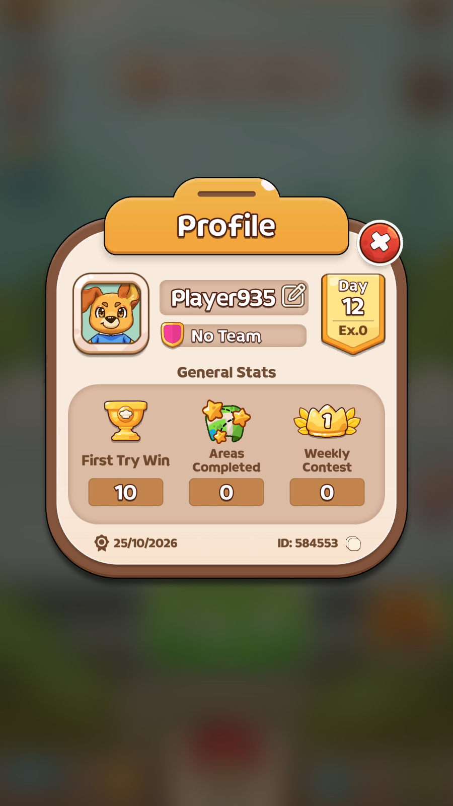

Hồ sơ (avatar, khung, huy hiệu)
Mô tả
- Hồ sơ người chơi gồm tên (3-15 ký tự), avatar, khung, hiệu ứng tên, huy hiệu, quốc gia, đội, ID server và thống kê (Day, thắng lần đầu, khu vực, top 1 tuần...).
- Có 24 avatar (mở theo nhà hàng / VIP), 11 khung, 2 hiệu ứng tên, 11 huy hiệu (mỗi nhà hàng một huy hiệu khi thắng mọi ngày của nhà hàng đó).
- Hồ sơ được đẩy lên server ABI dùng chung (
pushPrf) và là nguồn dữ liệu cho bảng xếp hạng, đội, Weekly Contest và popup xem người khác (readPrf). rankScoretính từ hồ sơ: màn chính x 1 000 000 + extra x 10 000 + thắng lần đầu x 1 000 + top 1 tuần x 100.- Mở từ icon avatar ở góc Home; xem hồ sơ người khác bằng bấm tên trên bảng xếp hạng / đội.
Thiết kế chi tiết
Tóm tắt thiết kế
- Code Hồ sơ là hộ chiếu xã hội: một object đẩy lên server hồ sơ ABI (
pushPrf) rồi mọi tính năng xã hội (bảng, đội, Weekly) đọc lại. - APK Trang trí: 24 avatar, 11 khung, 2 name fx, 11 huy hiệu; huy hiệu gắn 1-1 với 11 nhà hàng.
- Code
rankScoreghép thành tích vào một số: Day x 10^6 + Ex x 10^4 + first-try x 10^3 + top 1 tuần x 10^2. - Live 16/11 Save thật: Player9357, avatar 4, VN,
authKind"DEI", 9 khung mở sẵn,weeklyContestScore4 tuần. - Playtest Popup Profile có "No Team", huy hiệu Day, General Stats và ID để gửi CSKH.
- Nhận định Điểm kéo người chơi: avatar VIP và khung gắn nhà hàng khuyến khích đi sâu bản đồ.
Luồng người chơi từng bước
- Mở ProfileNgười chơi PlaytestBấm icon avatar Home → popup Profile.

Popup Profile Day 13: Player, "No Team", huy hiệu "Day 12 Ex.0", General Stats (First Try Win 10, Areas Completed 0, Weekly Contest 0), ngày 25/10/2026 và ID 584553. - Kiểm tra định danhHệ thống Code
ProfileFIconUICtrlchặn nếu định danh chưa sẵn sàng / xung đột / mất mạng. - Sửa hồ sơNgười chơi CodeEdit → 4 tab, chọn món đã mở, Save → toast
ProfileUpdated. - Lên serverHệ thống Code
pushPrfkèmrankScore; bảng xếp hạng và đội lấy lại ở lần fetch sau.

Thành phần hồ sơ (SOProfileConfig)
| Loại | Số lượng | Cách mở |
|---|---|---|
| Avatar | 24 | Theo nhà hàng (listAvatarUnlock), 8 cái VIP |
| Khung | 11 (0-8, 10, 17) | 9 khung theo level, còn lại theo sự kiện |
| Name fx | 2 | 1 gắn VIP pass |
| Huy hiệu | 11 | Thắng mọi ngày của nhà hàng tương ứng |
Nguồn: SOProfileConfig.asset; cách mở khung / name fx suy luận từ CheckUnlockAvatarFrameByLevel, CheckFrameNameFxForEvent.
Hồ sơ trong save 16/11
| Trường | Giá trị |
|---|---|
| serverId | 584553 |
| name | Player9357 |
| avatar | 4 |
| countryCode | VN |
| levelMain | 19 |
| numbFirstTryWin | 15 |
| rankScore | 19015000 |
| authKind | DEI |
| listFrameUnlocked | 0-8 |
Nguồn: save_end, file R1/JHwHd3yh0nPPGX65.
Vận dụng cho game khác
- Gộp mọi thành tích vào một
rankScoresố nguyên cho phép xếp hạng bằng một chỉ mục server. - Gắn trang trí hồ sơ (avatar VIP, huy hiệu) với tiến độ nội dung chính, giúp có mục tiêu sưu tầm không tốn tài nguyên game.
- Một router duy nhất mở popup hồ sơ chặn trùng popup khi người chơi bấm liên tiếp trên bảng xếp hạng.
Bảng tổng hợp mọi tính năng đã làm chi tiết: FoodiePop_ThietKeChiTiet.xlsx.
Mở khóa & điểm vào
Không có ngưỡng level: icon Profile luôn hiện trên Home (ProfileFIconUICtrl), nhưng bị chặn khi định danh chưa sẵn sàng hoặc đang xung đột ([IdentityRecovery] PROFILE_BLOCKED) và cần mạng (toast NetworkError). Khung mở dần theo tổng level (ProfileManager.CheckUnlockAvatarFrameByLevel), avatar / huy hiệu theo nhà hàng.
Điểm vào:
- Icon avatar trên Home (
ProfileFIconUICtrl.OpenPopupProfile) - Bấm một người trên bảng Players / Weekly / thành viên đội (
ProfilePopupRouterFacade.Open) - Popup Profile → nút Edit (
PopupEditProfileCtrl), tên đội (PopupTeamInfoCtrl) - Popup mở huy hiệu mới (
PopupBadgeUnlockedCtrl) tự bật khi nhận huy hiệu
Cách hoạt động
- Lần đầu có
ServerID:ProfileManager.CopyCoreProfileOncesao tên / avatar từ hồ sơ lõi CookOrder; tên mặc định dạng Player + số (Live: Player9357). CheckUpdateBaseInfo(khi định danh sẵn sàng, không đang chơi level) đẩy hồ sơpushPrf(name, cc, ava, sc = rankScore, info = JSON), rồiTeamServer.ChangeScore.- Mỗi lần thắng màn:
OnLevelWin/SaveLevelMaincập nhậtlevelMain,levelExtra,numbFirstTryWin, tính lạirankScore(SaveRankScore). CheckUnlockAvatarFrameByLevelmở khung theo tổng level;CheckUnlockAvatarByRestaurant/CheckUnlockBadgeByRestaurantmở avatar, huy hiệu theo nhà hàng.- Mở popup Profile:
PopupProfilePreviewCtrl.Openhiện tên, khung, huy hiệu, "Day N" (kèm "Ex.N"), đội / "No Team", ID, ngày tạo và ô thống kê. - Edit:
PopupEditProfileCtrl4 tab (Avatar / Frame / NameFx / Badge);SaveProfileEditlưuProfileDbModel.EditModel, toastProfileUpdated, đẩy lại lên server. - Xem người khác:
ProfilePopupRouter.OpenđọcreadPrftheo id rồi hiệnPopupProfilePreviewCtrlở chế độ xem.
Ảnh chụp
Bấm ảnh để phóng to, dùng phím ← → để chuyển ảnh. Nhãn màu cho biết nguồn bằng chứng của ảnh.
Phần thưởng
| Ngữ cảnh | Phần thưởng | Evidence |
|---|---|---|
| Mở khung / avatar / huy hiệu | Đồ trang trí hồ sơ (không có tiền tệ) | ProfileManager.UnlockBadge |
| Quà Inbox / sự kiện loại avatar, khung, name-fx | Cấp bằng RwItemType.ProfileAvatar (50), ProfileFrame (51), ProfileNameFx (52) | InboxRewards.IsValid |
Số liệu chính
| Chỉ số | Giá trị | Nguồn |
|---|---|---|
| Số avatar / khung / name fx / huy hiệu | 24 / 11 / 2 / 11 | SOProfileConfig.asset |
| Độ dài tên | 3-15 | SOProfileConfig.NameLenMin |
| rankScore mẫu | 19 015 000 | ProfileDbModel.rankScore (save 16/11) |
| ID server mẫu | 584553 | ProfileDbModel.serverId (Live 16/11) |
| AuthKind mẫu | DEI (thiết bị) | ProfileDbModel.authKind (Live 16/11) |
| Khung đã mở ở Day 19 | 9 (0-8) | ProfileDbModel.listFrameUnlocked |
Use case (13)
Bấm vào từng use case để mở. Mở/đóng tất cả
UC-01 Tạo hồ sơ lần đầu
Các bướcProfileManager.CopyCoreProfileOncecopy name / avatar từ hồ sơ lõi (cờcoreProfileCopied)EnsureCountryCodelấy mã quốc gia từ thiết bị / IP (WebService.GetCountryCodeFromDevice,GetCountryCode)CheckFirstOpenđặtfirstOpenPushProfileđẩy lên server
| Actor | System |
|---|---|
| Trigger | Có ServerID lần đầu |
| Điều kiện | Online |
| Kết quả | Hồ sơ có serverId, name, countryCode, createdTime |
| Quy tắc / số liệu | Save thật: Player9357, avatar 4, quốc gia VN, createdTime 1792922016 (25/10/2026). |
| Evidence | ProfileManager.CopyCoreProfileOnce |
UC-02 Xem hồ sơ của mình
Các bướcProfileFIconUICtrl.OpenPopupProfilekiểmidentityReady,v805Barrier,hasConflict,network- Bị chặn thì toast (
NetworkError) hoặc logPROFILE_BLOCKED ProfilePopupRouterFacade.OpenSelfmởPopupProfilePreviewCtrl
| Actor | Player |
|---|---|
| Trigger | Bấm icon avatar trên Home |
| Điều kiện | Định danh sẵn sàng, online |
| Kết quả | Popup hiện Player, "No Team", huy hiệu "Day 12 Ex.0", General Stats và ID |
| Quy tắc / số liệu | Playtest Day 13: First Try Win 10, Areas Completed 0, Weekly Contest 0; ID 584553. |
| Evidence | ProfileFIconUICtrl.OpenPopupProfile |
UC-03 Xem hồ sơ người khác
Các bướcProfilePopupRouter.Open(ProfileOpenRequest)kiểm hợp lệ, huỷ popup cũ nếu đổi mục tiêu (Supersede)ProfileServer.ReadProfileEnvelopegọireadPrf(pjId, id)- Dựng
ProfileDbModel.PreviewModel(id, un, av, af, an, ab, cc, ti, ta, tn, ct, lm...) - Hiện popup chế độ xem
| Actor | Player |
|---|---|
| Trigger | Bấm một người trong bảng / đội |
| Điều kiện | Online |
| Kết quả | Thấy avatar, khung, huy hiệu, đội, Day |
| Quy tắc / số liệu | Hồ sơ thành viên đội được cache có hạn (TeamManager.LoadMemberProfileDetail, ExpiresAt). |
| Evidence | ProfilePopupRouter.Open |
UC-04 Đổi avatar / khung / hiệu ứng tên / huy hiệu
Các bướcPopupEditProfileCtrl.Opendựng 4 danh sách (InitListAvatarItem,InitListFrameItem,InitListNameFxItem,InitListBadgeItem)- Chọn món (
ChangeAvatarSelected...) — món khoá hiện thông báo (AvatarUnlockPassDayOfMap,BadgeUnlockWinAllDays,ComingSoon) SaveProfileEdit→ProfileManager.SaveEdit, đẩy hồ sơ, toastProfileUpdated
| Actor | Player |
|---|---|
| Trigger | Bấm Edit trong popup Profile |
| Điều kiện | Món đã mở khoá |
| Kết quả | Hồ sơ đổi, bảng xếp hạng cập nhật ở lần fetch sau |
| Quy tắc / số liệu | Khung / hiệu ứng tên có prev* để quay lại món trước. |
| Evidence | PopupEditProfileCtrl.SaveProfileEdit |
UC-05 Đổi tên
Các bướcPopupEditProfileNameCtrlgiới hạn 3-15 ký tự (SOProfileConfig.NameLenMin / NameLenMax)SaveProfileEditlưu và đẩy hồ sơ
| Actor | Player |
|---|---|
| Trigger | Bấm bút cạnh tên |
| Điều kiện | — |
| Kết quả | Tên mới |
| Quy tắc / số liệu | Tên hiển thị qua R1UserTextSupport.ForDisplay (lọc / chuẩn hoá chữ). |
| Evidence | PopupEditProfileNameCtrl.SaveProfileEdit |
UC-06 Mở huy hiệu nhà hàng
Các bướcCheckUnlockBadgeByRestaurantso tiến độ vớiSOProfileConfig.ListBadge(11 huy hiệu: burger, coffee, icecream, pasta, sandwich, sushi, seafood, tteokbokki, dimsum, pizza, bento)UnlockBadge+ ghibadge_unlock(map_id, badge_id, level)CheckShowPopupBadgeUnlockedmởPopupBadgeUnlockedCtrl
| Actor | System |
|---|---|
| Trigger | Thắng hết ngày của một nhà hàng |
| Điều kiện | Chưa có huy hiệu đó |
| Kết quả | Huy hiệu vào listBadgeUnlocked, có thể đeo |
| Quy tắc / số liệu | Log: "Badge {0} earned: every day of {1} won". |
| Evidence | ProfileManager.CheckUnlockBadgeByRestaurant |
UC-07 Mở avatar theo nhà hàng
Các bướcCheckUnlockAvatarByRestaurantđối chiếuSOProfileConfig.listAvatarUnlock(customer, mapId, vip)IsAvatarUnlocked= avatar lõi mở và (không cần nhà hàng hoặcIsAvatarOpenByRestaurant)
| Actor | System |
|---|---|
| Trigger | Xây / qua nhà hàng |
| Điều kiện | — |
| Kết quả | Avatar hiện ở tab Avatar |
| Quy tắc / số liệu | 24 avatar có luật: 8 thuộc nhóm vip (sushi, coffee, icecream, pasta), 16 thường. |
| Evidence | ProfileManager.IsAvatarUnlocked |
UC-08 Mở khung theo level
Các bướcCheckUnlockAvatarFrameByLevelduyệt 9 khung đầu và gọiUnlockFrame/UnlockEquipFrame(tự đeo nếuEquipFrameOnLevelUnlock)
| Actor | System |
|---|---|
| Trigger | Tổng level tăng |
| Điều kiện | — |
| Kết quả | Save thật: khung 0-8 đã mở ở Day 19 |
| Quy tắc / số liệu | Khung 10 và 17 có thể mở bằng sự kiện (suy luận từ CheckFrameNameFxForEvent kiểm DreamyPass). |
| Evidence | ProfileManager.CheckUnlockAvatarFrameByLevel |
UC-09 Điểm xếp hạng
Các bướcProfileManager.SaveRankScoregọiCalcRankScore- Ghi
rankScorevào hồ sơ, đẩysclên server
| Actor | System |
|---|---|
| Trigger | Thắng màn, top 1 tuần... |
| Điều kiện | — |
| Kết quả | Bảng Players cập nhật |
| Quy tắc / số liệu | levelMain x 1 000 000 + levelExtra x 10 000 + numbFirstTryWin x 1 000 + weeklyContestTop1 x 100. |
| Evidence | ProfileManager.CalcRankScore |
UC-10 Tên lấy từ tài khoản nền tảng
Các bướcProfileManager.TrySetSocialNamelấySocialAuth.PlatformDisplayNamelàm tên
| Actor | System |
|---|---|
| Trigger | Đăng nhập Google Play Games |
| Điều kiện | Tên hiện còn mặc định |
| Kết quả | Tên khớp tài khoản Play Games |
| Quy tắc / số liệu | Log "Profile name taken from the platform account". |
| Evidence | ProfileManager.TrySetSocialName |
UC-11 Đổi ID server / xoá dữ liệu
Các bướcProfileManager.AdoptServerProfile(serverId)đọc hồ sơ từ server vàApplyServerProfileKeepServerIdAfterCleargiữ ID sau Clear DataProfileServer.SoftClearProfilegửi hồ sơ rỗng để xoá khỏi bảng
| Actor | System |
|---|---|
| Trigger | Định danh đổi hoặc người chơi Clear Data |
| Điều kiện | — |
| Kết quả | Hồ sơ theo ID mới; ID cũ ghi vào prevServerIds |
| Quy tắc / số liệu | Chi tiết ở Định danh server. |
| Evidence | ProfileManager.ApplyServerProfile |
UC-12 Thống kê hiển thị
Các bướcPopupProfilePreviewCtrl.LoadPreviewUIDataẩn / hiện ô thống kê bằngSetStatCellActive- Ô tim gửi / nhận chỉ hiện khi RC
r1plugin_team_enable_send_heartbật (R1RemoteConfig.TeamEnableSendHeart)
| Actor | Player |
|---|---|
| Trigger | Mở popup Profile |
| Điều kiện | — |
| Kết quả | Ô đã thấy: Day / Ex, First Try Win, Areas Completed, Weekly Contest; còn Stage Race, Dreamy Tower, Lives sent / received là các field có trong hồ sơ (suy luận ô hiển thị) |
| Quy tắc / số liệu | Playtest chỉ thấy First Try Win, Areas Completed, Weekly Contest. |
| Evidence | PopupProfilePreviewCtrl.LoadPreviewUIData |
UC-13 Sao chép ID
Các bướcPopupProfilePreviewCtrl.CopyUserIDđưaserverId+ "_" + phiên bản vào clipboard, toast "Copied"
| Actor | Player |
|---|---|
| Trigger | Bấm ID |
| Điều kiện | — |
| Kết quả | Người chơi gửi ID cho CSKH |
| Quy tắc / số liệu | ID hiển thị dạng "ID: 584553". |
| Evidence | PopupProfilePreviewCtrl.CopyUserID |
Cấu hình (9)
Gộp mọi nguồn: const trong code, giá trị mặc định trong APK, storage key, AB test, cờ server.
| Nguồn | Key | Kiểu | Giá trị | Ý nghĩa | Nơi định nghĩa |
|---|---|---|---|---|---|
| code const | SOProfileConfig.NameLenMin / NameLenMax | int | 3 / 15 | Độ dài tên | SOProfileConfig |
| asset | SOProfileConfig.listAvatarStt | list | 24 avatar: 4, 5, 14, 7, 8, 9, 10, 13, 2, 3, 6, 11, 0, 1, 17, 18, 19, 22, 23, 12, 15, 16, 20, 21 | Thứ tự hiển thị avatar | SOProfileConfig.asset |
| asset | SOProfileConfig.listFrameStt | list | 11 khung: 0-8, 10, 17 | Khung hiển thị | SOProfileConfig.asset |
| asset | SOProfileConfig.listNameFxStt | list | 2 hiệu ứng tên: 0, 1 | Name fx (1 gắn VIP pass NameFxVipPassCtrl) | SOProfileConfig.asset |
| asset | SOProfileConfig.listAvatarUnlock | list | 24 luật (customer, mapId, vip): ví dụ wolf_yakuza sushi VIP, dog_boy burger thường, cat_lady pasta thường | Avatar mở theo nhà hàng; vip = 1 thuộc nhóm VIP | SOProfileConfig.asset |
| asset | SOProfileConfig.listBadge | list | 11 huy hiệu: 1 burger, 2 coffee, 3 icecream, 4 pasta, 5 sandwich, 6 sushi, 7 seafood, 8 tteokbokki, 9 dimsum, 10 pizza, 11 bento | Huy hiệu mỗi nhà hàng | SOProfileConfig.asset |
| code const | ProfileManager.EquipFrameOnLevelUnlock | bool | readonly (giá trị theo cctor) | Tự đeo khung vừa mở | ProfileManager |
| storage key | ProfileDbModel (save) | object | serverId, name, avatar, frame, nameFx, badge, listFrameUnlocked, listNameFxUnlocked, listBadgeUnlocked, countryCode, teamId, teamFlag, teamName, createdTime, levelMain, levelExtra, rankScore, numbFirstTryWin, liveSendCount, liveRecvCount, stageRaceWin, dreamyTowerMax, weeklyContestTop1, numbRestaurantBuilt, teamTreasurePoint, weeklyContestScore, authKind, prevServerIds, needPushProfile... | Hồ sơ lưu local + R1SaveBlock.pr | ProfileDbModel (Live 16/11: file R1/JHwHd3yh0nPPGX65) |
| server info | ABIServerReadProfileModel.ResponseDataModel | object | id, name, cc, ava, sc, info, time | Hồ sơ server: id, tên, quốc gia, avatar, điểm, JSON mở rộng, thời gian | readPrf |
Backend / server
| Command | Chiều | Mục đích |
|---|---|---|
pushPrf | client→server (ghi) | Đẩy hồ sơ: command, pjId, id, name, cc, ava, sc (rankScore), info (JSON gồm khung, huy hiệu, điểm Weekly / Treasure...) |
readPrf | client→server (đọc) | Đọc hồ sơ người khác: command, pjId, id → id, name, cc, ava, sc, info, time |
pushPrf (hồ sơ rỗng) | client→server (ghi) | SoftClearProfile: xoá mềm hồ sơ khỏi bảng xếp hạng |
Giao diện (UI)
| Element | Class | Mục đích |
|---|---|---|
| Icon avatar Home | _GAME.Profile.ProfileFIconUICtrl | Mở hồ sơ, kiểm chặn định danh |
| Popup hồ sơ | _GAME.Profile.PopupProfilePreviewCtrl | Xem hồ sơ mình / người khác |
| Popup sửa hồ sơ | _GAME.Profile.PopupEditProfileCtrl | 4 tab Avatar, Frame, NameFx, Badge |
| Popup đổi tên | _GAME.Profile.PopupEditProfileNameCtrl | Nhập tên |
| Popup huy hiệu mới | _GAME.Profile.PopupBadgeUnlockedCtrl | Chúc mừng nhận huy hiệu |
| Huy hiệu trên Journey | _GAME.Profile.JourneyBadgeUICtrl | Hiện huy hiệu trên thẻ nhà hàng |
| Router mở popup | _GAME.Profile.ProfilePopupRouter | Một cổng duy nhất mở hồ sơ, tránh trùng popup |
Analytics (1)
| Event | Tham số | Khi nào |
|---|---|---|
badge_unlock | map_id, badge_id, level | Nhận huy hiệu nhà hàng (ProfileManager.CheckUnlockBadgeByRestaurant) |
Storage keys
ProfileDbModel (file R1/JHwHd3yh0nPPGX65 trong save) ProfileDbModel.needPushProfile ProfileDbModel.coreProfileCopied ProfileDbModel.prevServerIds R1SaveBlock.pr (ProfileDbModel.SaveGameModel)
Còn thiếu / chưa xác minh
- Ngưỡng level mở từng khung (0-8) nằm trong dữ liệu không đọc được từ pseudo-C; chỉ biết đến Day 19 đã mở cả 9.
- Ý nghĩa chính xác id khung 10 và 17, name fx 1 (VIP pass) suy luận từ tên lớp
NameFxVipPassCtrlvàCheckFrameNameFxForEvent. - Chi phí (nếu có) khi đổi tên / avatar chưa thấy trong code.
- Playtest chỉ xem popup Profile, chưa bấm Edit / avatar / tên; chưa có ảnh tab chỉnh sửa.
- Ảnh Profile ghi "Player935" trong RESULTS_LIVE nhưng save thật là Player9357 (cắt ký tự cuối khi hiển thị).
Tính năng liên quan
Bảng xếp hạng Đội (Team) Kho báu đội (Team Treasure) Thi đấu tuần (Weekly Contest) Định danh server và đồng bộ save Hộp thư (Inbox) Hành trình (tab Restaurants)
Nguồn đã đọc
_analysis/code/decompiled/R1Plugins/_GAME.Profile.ProfileManager.c_analysis/code/decompiled/R1Plugins/_GAME.Profile.PopupProfilePreviewCtrl.c_analysis/code/stubs/R1Plugins/_GAME.Profile.ProfileDbModel.cs_rip/ExportedProject/Assets/MonoBehaviour/SOProfileConfig.asset_analysis/live/fp_20261116/save_end/R1 (ProfileDbModel)_analysis/live/fp_20261116/RESULTS_LIVE.md